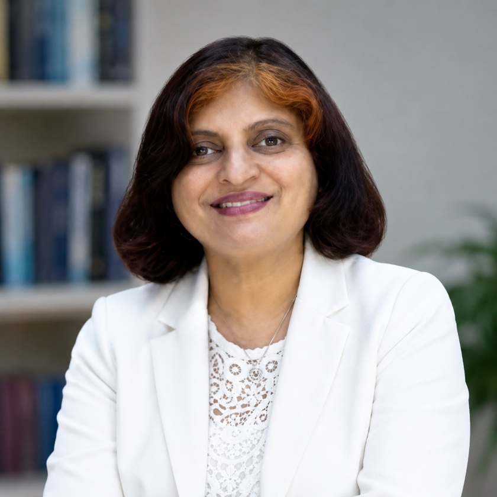

Dr. Neera Bhan
Dr. Neera Bhan is a senior gynaecologist, obstetrician and laparoscopic surgeon with three decades of practice across Kuwait, Australia, the United Kingdom and India. She completed her MBBS and MD in Obstetrics & Gynaecology from Lady Hardinge Medical College, New Delhi. She received her MRCOG from the Royal College of Obstetricians and Gynaecologists, London in 2007, and her Fellowship (FRCOG) in 2019.
Her surgical training is exceptional: she holds a Diploma in Advanced Laparoscopic Surgery from France, and trained under Dr. Roger Fay, an Australian pioneer in laparoscopic gynaecology. She served as Senior Resident at Mowasat Hospital, Kuwait (1992–93) and Senior Registrar in Obstetrics & Gynaecology at Nepean Hospital, Sydney (1993–97). Back in India, she was Professor at Santosh Hospital (1997–2005), Senior Consultant at Fortis Hospital, Noida (2007–2017), and Senior Consultant at Columbia Asia / Manipal Hospital, Ghaziabad (2017–2024).
She also runs a popular YouTube channel, Gynae Pedia, dedicated to women's health awareness — explaining periods, PCOS, menopause, fertility and surgery in clear, accessible language for tens of thousands of viewers.
- TodaySenior Consultant, Obstetrics & GynaecologyPractising in Ghaziabad · Delhi NCR
- 2017 — 2024Senior ConsultantColumbia Asia / Manipal Hospital, Ghaziabad
- 2019Fellow of the Royal College of Obstetricians & GynaecologistsFRCOG — Royal College, London, United Kingdom
- 2007 — 2017Senior ConsultantFortis Hospital, Noida
- 2007Membership, Royal College of Obstetricians & GynaecologistsMRCOG — London, United Kingdom
- FranceDiploma in Advanced Laparoscopic SurgeryEndoscopic & Laparoscopic Surgery Training, France
- 1997 — 2005Professor, Obstetrics & GynaecologySantosh Hospital, Ghaziabad
- 1993 — 1997Senior Registrar, Obstetrics & GynaecologyNepean Hospital, Sydney, Australia
- 1992 — 1993Senior ResidentMowasat Hospital, Kuwait
- 1988 — 1991MD, Obstetrics & GynaecologyLady Hardinge Medical College, University of Delhi
- 1982 — 1987MBBSLady Hardinge Medical College, University of Delhi